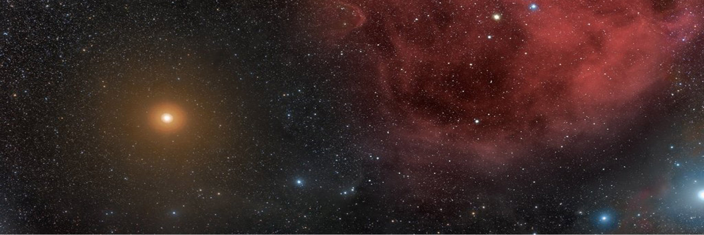

BETELGEUSE, LA GIGANTE ESTRELLA AGONIZANTE
Contenido 1 Contenido 2 ¿Cuándo explotará Betelgeuse en una supernova?
Betelgeuse ya está clasificada como una estrella condenada a morir, pero la pregunta es cuándo ocurrirá su muerte. La estrella tiene sólo entre unos 8 a 10 millones de años, comparada con nuestro Sol que tiene 4.500 millones de años, pero está agotando el combustible de su núcleo a una ritmo extremadamente rápido.